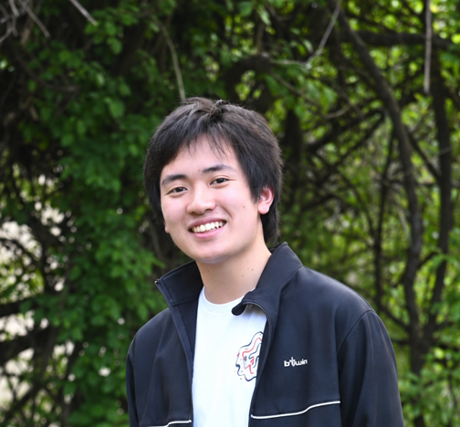

Organizer
Lyudong Yan
Lyudong Yan is a researcher at the University of Pittsburgh’s HexAI Medical AI Laboratory, where he works on machine learning, medical imaging, and trustworthy AI in healthcare. As AI rapidly changes how people access and generate information, he believes the ideas that matter most still begin with human experience, curiosity, and perspective. He organized TEDxAuburnHills to create a space where those ideas can be shared, challenged, and carried into our lives.